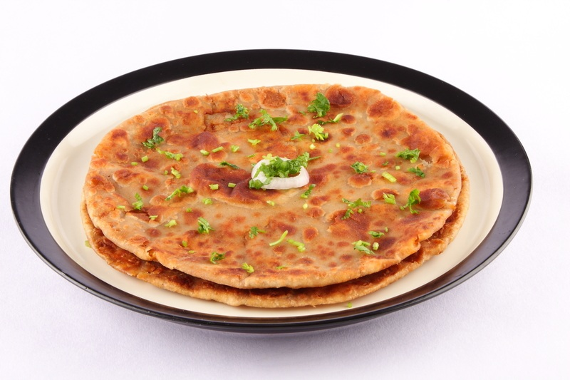

Aloo Paratha Recipe

Aloo Paratha is a hearty North Indian flatbread stuffed with a spiced mashed-potato filling. Pan-fried with ghee until golden, it is a popular breakfast served with yogurt, pickle, or butter.
Ingredients
- 2 cups whole wheat flour
- 3 potatoes, boiled and mashed
- 1 green chili, finely chopped
- 1/2 tsp cumin seeds
- 1/4 tsp garam masala
- 2 tbsp fresh coriander, chopped
- Ghee, for cooking
- Salt, to taste
Steps
- Knead the flour with water and a pinch of salt into a soft dough; rest for 20 minutes.
- Mix the mashed potatoes with green chili, cumin, garam masala, coriander, and salt.
- Roll out a small disc of dough, place the filling in the center, seal, and roll flat.
- Cook on a hot tava, brushing both sides with ghee until golden-brown spots appear.
- Serve hot with yogurt and pickle.
Back to Home